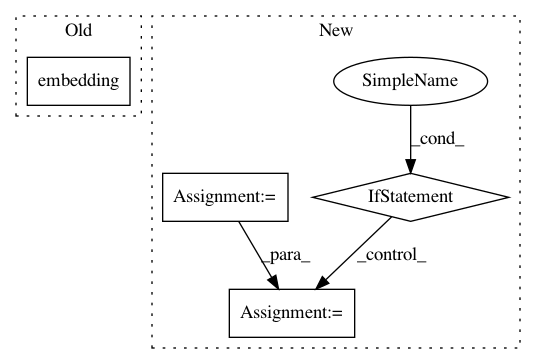

2fd10474faf8b1c519d00d1215956f417cea01ed,batchflow/models/tf/encoder_decoder.py,EncoderDecoder,body,#Any#Any#Any#,133
Before Change
encoder_outputs = cls.encoder(inputs, **encoder, **kwargs)
// Bottleneck: working with compressed representation
x = cls.embedding(encoder_outputs[-1], **embedding, **kwargs)
encoder_outputs.append(x)
// Decoder: transition up
x = cls.decoder(encoder_outputs, **decoder, **kwargs)
After Change
with tf.variable_scope(name):
// Encoder: transition down
encoder_args = {**kwargs, **encoder}
encoder_outputs = cls.encoder(inputs, name="encoder", **encoder_args)
x = encoder_outputs[-1]
// Bottleneck: working with compressed representation via multiple steps of processing
for embedding_name in embedding_order:
embedding_args = kwargs.pop(embedding_name)
if embedding_args:
embedding_args = {**kwargs, **embedding_common, **embedding_args}
x = cls.embedding(x, name=embedding_name, **embedding_args)
encoder_outputs.append(x)
// Decoder: transition up
decoder_args = {**kwargs, **decoder}
In pattern: SUPERPATTERN
Frequency: 3
Non-data size: 4
Instances
Project Name: analysiscenter/batchflow
Commit Name: 2fd10474faf8b1c519d00d1215956f417cea01ed
Time: 2019-07-04
Author: Tsimfer.SA@gazprom-neft.ru
File Name: batchflow/models/tf/encoder_decoder.py
Class Name: EncoderDecoder
Method Name: body
Project Name: deepchem/deepchem
Commit Name: f766c92a63fb67a99744dcb82c8c78406fbf905a
Time: 2020-11-04
Author: mufeili1996@gmail.com
File Name: deepchem/models/torch_models/gat.py
Class Name: GAT
Method Name: forward
Project Name: deepchem/deepchem
Commit Name: 97d7f88df32ae58875d7534c7c517905a3eb1341
Time: 2020-11-05
Author: mufeili1996@gmail.com
File Name: deepchem/models/torch_models/gat.py
Class Name: GAT
Method Name: forward